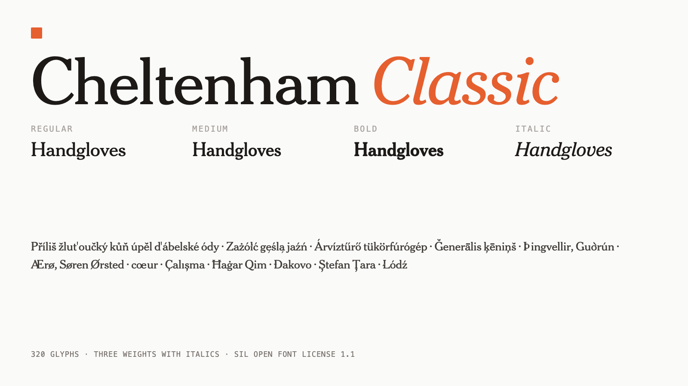

Cheltenham Classic is an open-source serif family in three weights with matching italics, drawn in the spirit of Cheltenham — the face Bertram Goodhue and Ingalls Kimball designed for the Cheltenham Press in 1896, whose tall ascenders, short descenders and sturdy, blunt serifs made it one of the most widely set types of the early twentieth century.
The family covers the Google Fonts Latin Core set: 320 glyphs across Regular, Medium and Bold, each with an italic. That reach takes in Czech, Polish, Hungarian, Turkish, Latvian, Lithuanian, Romanian, Icelandic, Croatian, Maltese, the Nordic languages and Esperanto, alongside the currency, reference and editorial marks that running text needs.
It is built in the open and from source. The six
.glyphspackage files in the repository are the only inputs;
every binary that ships is produced by fontmake and checked with
FontBakery in continuous integration, and a release cannot be tagged while a
combining mark is still an empty outline. The accents, the stroked letters
and the Latin Core expansion are generated from measurements taken off each
style's own built outlines — stem weight, hairline, x-height, ascender
and slant — so the Bold's accents carry the Bold's weight and the
italics' lean at the italics' own angle rather than at a number typed into a
script.
Cheltenham Classic suits the places its ancestor was used: headlines, mastheads, short editorial text and book covers. The Medium sits close enough to the Regular to work as a quiet emphasis within a paragraph, and the italics are drawn with a noticeably larger x-height, which keeps them readable when they are set small.